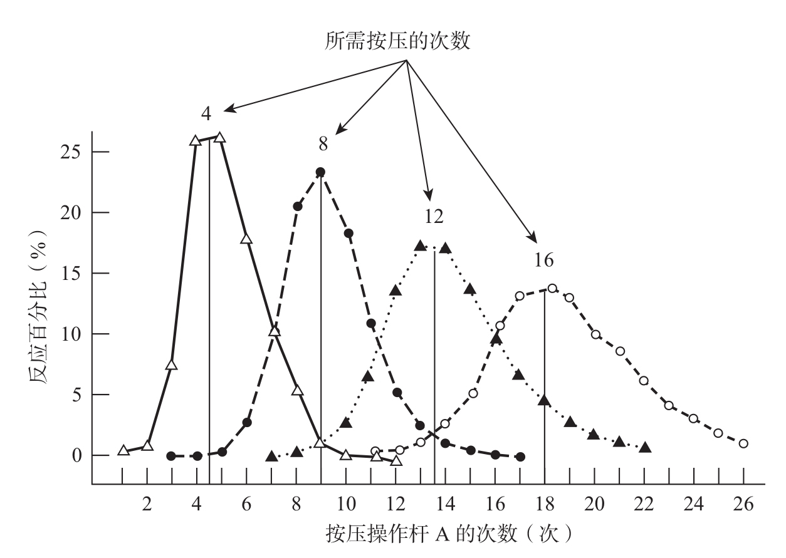
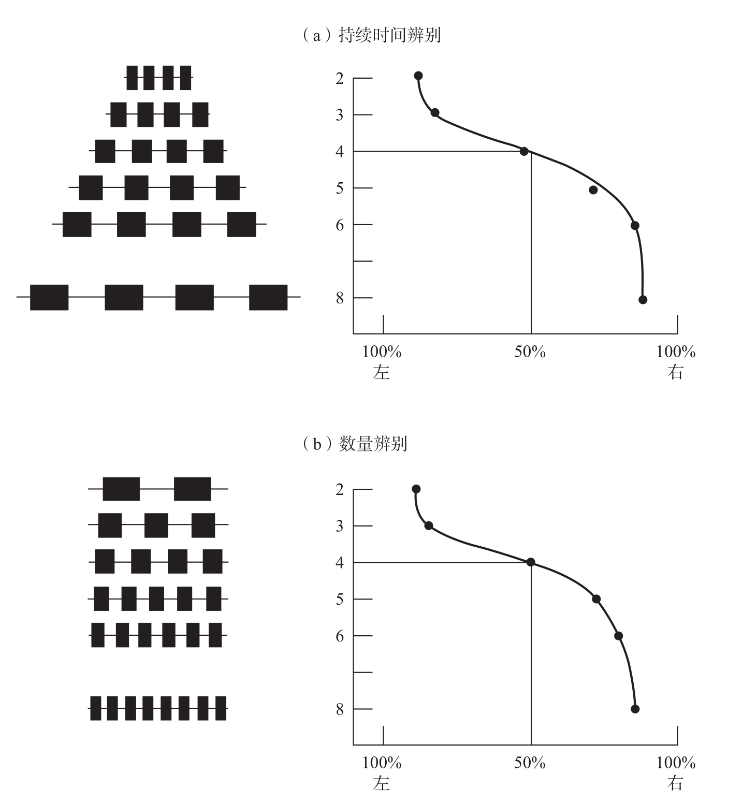

在汉斯事件之后，一些著名的美国实验室开始对动物的数学能力展开研究。这类项目大多失败了，然而，德国著名动物行为学家奥托·克勒（Otto Koehler）的研究却取得了一些成就2。在他训练的乌鸦中，有一只名为雅各布（Jacob）的学会了在一些容器中选出钻有5个孔的那个盖子。因为在不同的实验轮次中，5个点的大小、形状和位置是随机改变的，所以这种表现只能被解释为“此乌鸦对数字5有精确的认知”。但是，克勒团队的这项成果影响甚微，一方面是因为其大部分的研究结果只是在德国发表，另一方面是因为克勒的同事认为，他并没有排除所有可能的失误源，如实验者间的无意识交流或嗅觉线索。
在20世纪五六十年代，美国哥伦比亚大学的动物心理学家弗朗西斯·梅希纳（Francis Mechner）与艾奥瓦大学的约翰·普拉特（John Platt）和大卫·约翰逊（David Johnson）一起，采用了一种令人信服的实验范式，我在这里粗略地介绍一下3。实验者将一只被暂时剥夺了食物的老鼠安置在封闭的盒子中，盒子里有A和B两根操作杆。操作杆B与一个机械设备相连，这个设备可以给出少量的食物。然而，这个奖赏系统并不是即时的。老鼠需要重复地按压操作杆A，只有按压到n次时，它才能在按下操作杆B时得到食物。如果这只老鼠过早地按压操作杆B，它不仅不会得到任何食物，而且还会受到惩罚。在不同的实验中，光线可能会消失几秒，或者计数器会被重置，此时老鼠必须从头开始对操作杆A进行n次按压。
在这个不同寻常的实验中，老鼠的表现怎样呢？起初，通过反复尝试，它们发现，当按压了几次操作杆A后再按压操作杆B，食物就会出现。逐渐地，它们对按压次数的估计越来越精确。最后，在训练结束时，老鼠对实验者选择的数字n都有非常合理的认识。那些需要先按压4次操作杆A才能得到食物的老鼠确实按了大约4次。那些需要按压8次的老鼠，也一定会按压大约8次，依此类推（见图1-3）。即便要求的按压次数是像12和16这样的大数字，聪明的老鼠“会计师”也能够按压到正确的次数！

在梅希纳的实验中，老鼠在学习按压操作杆B之前，需先按压操作杆A达到事先规定的次数。尽管随着数字变大，估计值的变化范围也会扩大，但老鼠的按压次数与实验者规定的数字大致相当。
图1-3(5) 老鼠“会计师”
资料来源：经作者和出版商许可，改编自Mechner, 1958；版权所有
©1958 by the Society for the Experimental Analysis of Behavior。
其中有两个细节值得一提。第一，老鼠按压操作杆A的次数会略高于所要求的最低值——5次而不是4次。但是，这是一个极其理性的策略。它们过早地按压操作杆B会受到惩罚，所以为了安全起见，它们宁愿多按1次操作杆A，也不敢少按1次。第二，即便是在受到大量的训练之后，老鼠的行为仍旧不怎么精准。最理想的策略是精确地按压4次操作杆A，然而老鼠通常会按4次、5次或者6次，在一些实验中，它们甚至会按压3次或者7次。它们的行为绝对不是“数字化”（digital）的，而且在每一个实验轮次中都会有变化。事实上，其变化范围会随着老鼠所估计的目标数字的增大而扩大。当目标按压次数是4时，老鼠的按压次数在3次到7次之间；而当目标次数是16时，老鼠的按压次数就会在12次到24次之间变化，跨度很大。看来，老鼠的估计机制相当不精准，与我们的数字计算器完全不同。
到了这个阶段，许多人可能会怀疑我是否过早地认定老鼠拥有计数能力，以及我们是否真的找不到对老鼠行为的更为简单的解释。首先我要申明的是，“聪明的汉斯”效应不会对这类实验产生影响，因为老鼠被单独安置在笼中，而且所有的实验过程都由自动化的机械设备所控制。那么，老鼠是真的对操作杆的按压次数敏感，还是它们估计了从实验开始到停止按压的时间，或是利用了其他与数量无关的参量？如果老鼠以特定的频率按压，比如每秒1次，那么上述行为可能要用对时间的估计来解释，而不能用对次数的估计来解释。当按压操作杆A时，老鼠可能会依不同情况等上4秒、8秒、12秒或16秒再去按操作杆B。比起“老鼠可以数出自己的动作次数”这一假说，这样的解释显得更为简单，尽管估计持续时间与估计数字实际上是同样复杂的操作。
为了驳斥这种有关时间估计的解释，梅希纳和洛朗斯·格夫雷基安（Laurence Guevrekian）4采取了非常简单的控制方法：他们让老鼠的食物被剥夺程度产生差异。当老鼠真的很饿时，它们急于尽快得到食物奖励，所以会更快地按压操作杆。然而，这种频率的增加对它们按压操作杆的次数没有任何影响。被训练按压4次的老鼠，其压杆表现仍在3次到7次的范围内，而要求按压8次的，仍然会按压8次左右，对其他数字也同样如此。按压数的平均值和结果的离散程度都没有随着按压频率的增加而改变。显然，是数字参数而非时间参数促成了老鼠的行为。
美国布朗大学的拉塞尔·丘奇（Russell Church）和沃伦·梅克（Warren Meck）进行的一项较新的实验表明，老鼠自发地对事件的次数和持续时间给予同等程度的关注。在丘奇和梅克的实验5中，实验者通过一个放置在鼠笼中的扬声器播放一串声音。一共有2个声音序列，序列A由2个音组成，一共持续2秒；序列B由8个音组成，持续8秒。老鼠需要辨别这两段声音。每放完一段声音，两根操作杆会被插入笼子中。为了得到食物奖励，老鼠在听到序列A时，必须按下左边的操作杆，而听到序列B时，必须按下右边的操作杆（见图1-4）。

梅克和丘奇训练老鼠在听到由2个音组成的短声音序列时按压左边的操作杆，在听到由8个音组成的长声音序列时按压右边的操作杆。在之后的实验中，老鼠也会自动地泛化训练的结果：当声音数一定时，它们能够区分持续2秒的序列和持续8秒的序列（a）；而当持续时间一定时，它们能够区分由2个音组成的序列和由8个音组成的序列（b）。在两种条件下，4似乎都是2和8的“主观中点”，在这种情况下，老鼠无法决定应该按压哪边的操作杆。
图1-4 老鼠对事件次数和持续时间的关注度相同
资料来源：改编自Meck & Church, 1983。
几个初步实验表明，处于这种环境下的老鼠很快就学会了按压正确的操作杆。显然，它们可以利用两个截然不同的参数来辨别A和B：序列的总持续时间（2秒和8秒），或是音数（2个和8个）。那么，老鼠关注的是持续时间、音数，还是两个都关注？为了寻找答案，实验者设计了一些测试声音序列，其中一些声音序列的持续时间固定而音数不同，而另外一些则是音数相同但持续时间不同。在第一种类型中，所有的序列都持续4秒，每个序列由2至8个音组成。在第二种类型中，所有的序列都由4个音组成，每个序列持续时间为2至8秒不等。在所有这些测试中，不论按压哪根操作杆，老鼠都能够得到食物奖励。研究者的目的是想了解，在排除了奖励的影响之后，这些新刺激对老鼠来说意味着什么。因此，这个实验测试的是老鼠将先前习得的行为泛化至新环境的能力。
结果一目了然。在持续时间和数量方面，老鼠都能很容易地将习得行为进行泛化，以应对新的情况。当持续时间固定时，它们仍会在听到2个音时按压左边的操作杆，在听到8个音时按压右边的操作杆。反过来，当音数固定时，它们会在听到持续时间为2秒的声音序列时按压左边的操作杆，听到持续时间为8秒的声音序列时按压右边的操作杆。那么对于2到8之间的其他数，老鼠的表现如何呢？老鼠似乎会把呈现的刺激关联到最接近的已习得的刺激量。因此，在听到一个全新的、由3个音组成的序列时，老鼠会做出与听到2个音时一样的反应，当序列由5个或6个音组成时，其反应会与听到8个音时相同。奇怪的是，当序列由4个音组成时，老鼠无法决定应当按压哪根操作杆。对于老鼠来说，4就是数字2和8之间的主观中点（subjective midpoint）！
需要注意的是，在训练过程中，老鼠并不知道它们会在后续的实验中进行持续时间不同还是音数不同的测试。因此，这个实验表明，当一只老鼠听到一段旋律时，其大脑会自发地同时处理持续时间和音数。如果你认为这个实验运用了条件反射的原理，是实验者或多或少教会了老鼠怎样计数，那就大错特错了。实际上，实验中的老鼠拥有最高级的视觉、听觉、触觉和数字知觉的硬件条件。条件反射只是教动物将它一直拥有的知觉能力（比如对刺激持续时间、颜色或是次数的表征），与新的动作（比如按压操作杆）联系起来。数字并不是外部世界中的一个复杂参数，它不比其他所谓客观参数或物理参数（比如颜色、空间位置或持续时间）更抽象。事实上，既然动物已经具备了相应的脑模块，那么计算一个集合中客体的近似数目理应与感知其颜色和方位一样简单。
我们现在知道，老鼠和其他许多物种一样，都会自发地关注各种数量信息：动作、声音、闪光、食物的数量6。例如，有研究者已经证明，当试验者让浣熊在一些装有葡萄的透明箱子之间进行选择时，它能学会只选取装有3颗葡萄的箱子，而忽略装有2颗或4颗葡萄的箱子。同样，在迷津任务中，无论通道间的距离有多远，老鼠都能够通过条件反射训练，选取左侧第4条通道。其他的研究者教会了鸟在一组连通的笼子中选出它们发现的第5颗种子。另外，在一些情况下，鸽子能够估计自己啄击目标的次数，比如，它们能够辨别45次啄击和50次啄击之间的差异。最后再举一个例子。一些动物，包括老鼠，能够记得在特定环境中受到奖励和惩罚的次数。美国普渡大学的卡帕尔迪（Capaldi）和丹尼尔·米勒（Daniel Miller）的一个精妙实验表明，当老鼠获得两种不同的食物奖励时，比如葡萄干和谷物，它们同时记住了三则信息：它们吃的葡萄干数和谷物数，以及总的食物种类7。总的来说，算术能力在动物世界相当普遍，根本算不上特殊能力。它在帮助动物生存方面的优势是显而易见的。一旦老鼠记住了它的藏身之处是左侧第4条通道，那它在迷津一般的黑暗巢穴中就会移动得更快；松鼠在发现了长着3颗坚果的树枝时，会放弃长着2颗坚果的树枝，这样它就更有可能安全过冬。